Activity: Building & Publishing GitBooks
In this activity, turn your lesson plan GitHub repository into a full-fledged student-facing website! Make sure you already have your own repository before you get started.
Lesson Plan Template Example
The template from before already has its own live GitBook, built from its source!
- Template Repository: https://github.com/hylandtechoutreach/lesson-plan-template
- Live GitBook: https://hylandtechoutreach.github.io/lesson-plan-template/
Using this template will make it easy to get your own GitBook up and running quickly.
GitHub Action Configuration
This process is made possible by the .github/workflows/BuildGitBook.yml file from the template. That file, with that specific format in that specific location, automatically adds a GitHub Action to the repository. The action:
- runs on every
pushevent - if the
mainbranch received the push - grabs the latest code
- runs the
tuliren/publish-gitbook@v1.0.0action
This is what builds the GitBook site in the gh-pages branch. All you have to do is provide the proper settings!
Step 1: Open Your Repository in GitHub
First, open up your repository from the previous activity in GitHub on the web.
Step 2: Update Permissions for GitHub Actions
Next, the GitHub Action workflow needs the proper permissions in order to push the GitBook code to the repository. Follow these steps:
- Open the Settings of the repository from the top menu
- On the left, under Code and automation, click the Actions dropdown
- Under Actions, select the General page
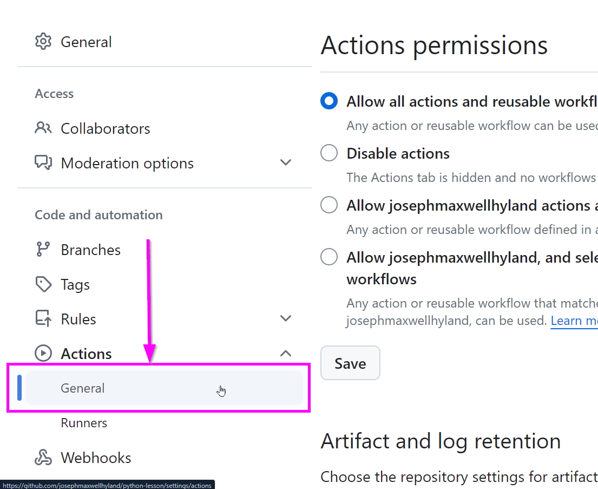 - On that page, scroll down to the Workflow permissions section
- Select the Read and write permissions option
- Click the Save button
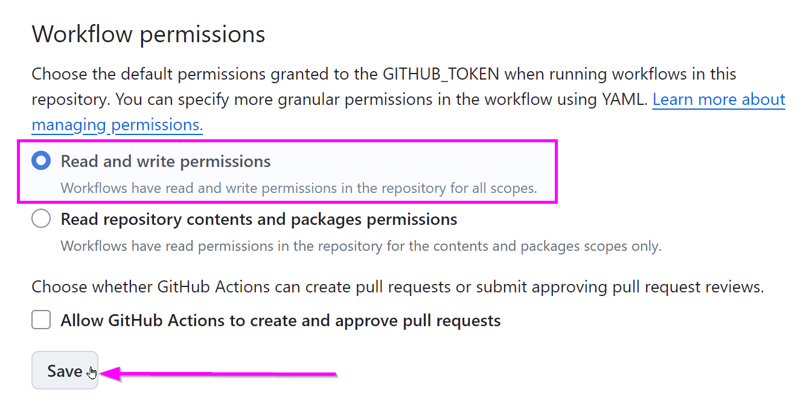
Now the GitHub Action should be able to run successfully. It's time to test it.
Step 3: Update the Content
Make a nominal change to the codebase just to see if it's working.
- Open the AdditionalPage.md file from the GitHub Web interface
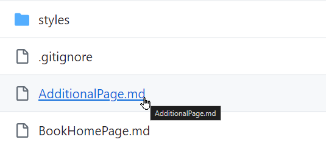 - When viewing the file, click the edit button in the upper right
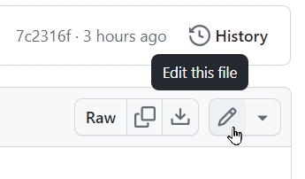 - In the editor, make a change in the file (like adding "It's cool." at the end)
- Click the Commit changes button in the upper right
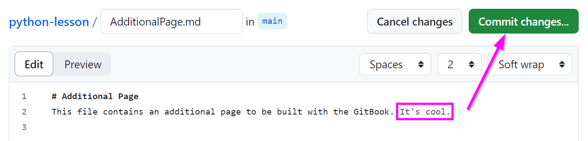 - In the pop-up that appears, click the Commit changes button
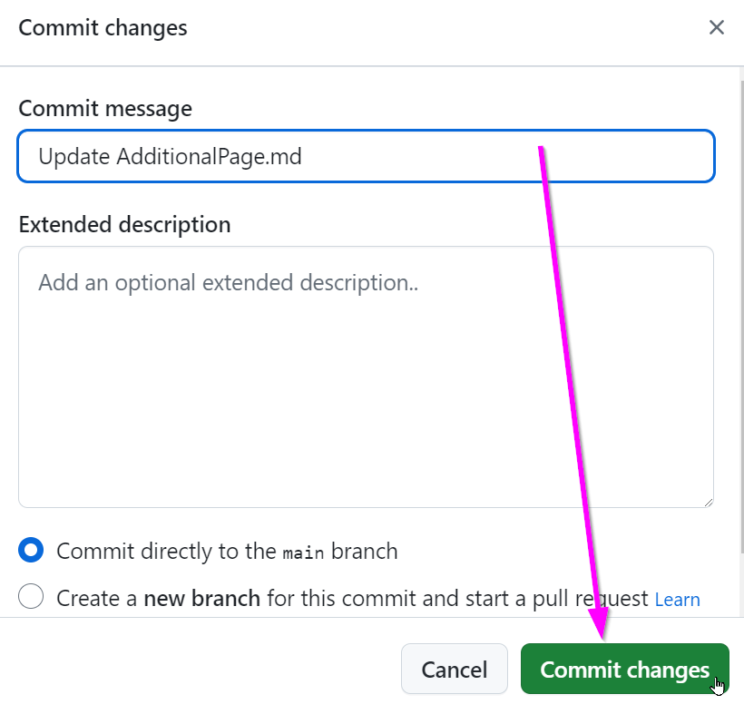
Note: committing the changes through the GitHub Web interface will act as a
pushaction to themainbranch.
Pushing this change will kick off the build process through GitHub Actions! Open the Actions of the repository from the top menu to check on the progress of the action:
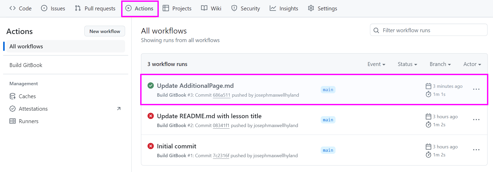
Once it completes successfully, all that's left is to make sure GitHub Pages is hooked up to the correct branch.
Step 4: Update the Source for GitHub Pages
The final step is to set the source for GitHub Pages.
- Reopen the Settings of the repository from the top menu
- On the left, under the Code and automation, click the Pages link
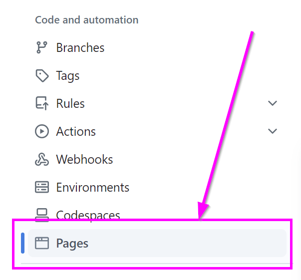 - In the Build and deployment section, under Branch, select the None dropdown and choose gh-pages
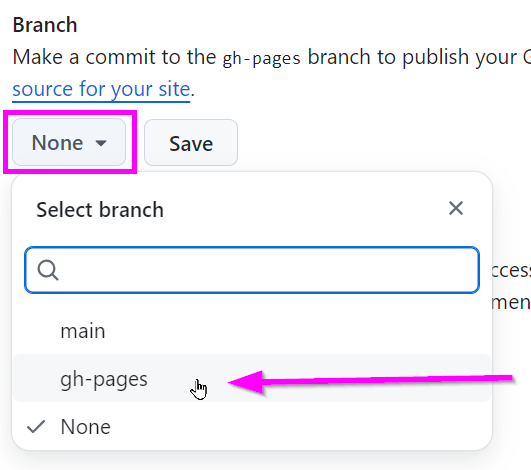 - Click the Save button
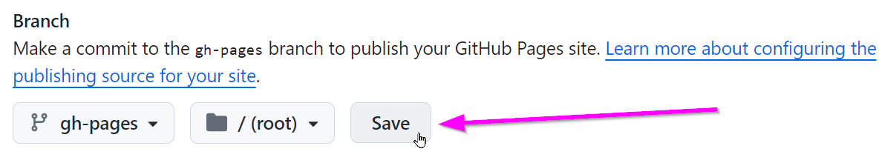
That's it! Wait for a minute or so, then refresh the page. A box should appear:
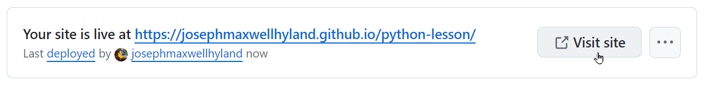
Click the link, or the Visit site button, to visit your live GitBook!
Notes
A couple of notes regarding GitHub Pages:
- With the free version of GitHub, a repository must be public for GitHub Pages to be available
- Creating a simplified URL (e.g.,
yourusername.github.io) is possible by creating a repository with that name